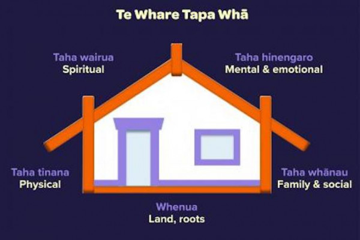

Introducing Te Whare Tapa Whā
In this blog, I will create a holistic well-being plan based on the different aspects of Te Whare Tapa Whā.
-
Te whare tapa whā is a model of the 4 dimensions of wellbeing
developed by Sir Mason Durie in 1984 to provide a Māori perspective on
health. The 4 dimensions are:
- taha tinana (physical wellbeing)
- taha hinengaro (mental wellbeing)
- taha wairua (spiritual wellbeing)
- taha whānau (family wellbeing).
With 4 walls, the wharenui (meeting house) is a symbol of these 4 dimensions. The wharenui's connection with the whenua (land) forms the foundation for the other 4 dimensions.
As the foundation for the other 4 dimensions, the health of the land and the natural environment is strongly connected to our health and wellbeing. You can think about whenua as your place of belonging.
Connection to the land and to nature has been shown to improve mental and physical wellbeing.
My plan to connect the land and nature is spending 45 minutes outside walking every day to enjoy the beautiful environment and breath the fresh air, watering and maitaining my garden every week, and taking a short travelling every month.
Taha tinana is your physical wellbeing. It is about how your body grows, feels and moves, and how you care for it.
Nourishing and strengthening your physical wellbeing helps you to cope with the ups and downs and life. Feeling physically well helps you feel mentally well.
Some key things to take care of taha tinana are physical activity, healthy eating, sleep and not smoking.
My plan to support my physical well-being is eating fresh food and keeping balanced nutrition for my body, arranging proper sleeping time, and helping a friend of mine quit drinking.
Taha hinengaro is your mind, heart, conscience, thoughts and feelings. It's about how you feel, as well as how you communicate and think.
Taking care of taha hinengaro is important for everyone, regardless of whether or not you've experienced mental illness or distress.
When taha hinengaro is strong, you can better cope with life's challenges. You can express your feelings and reach out for support from friends, whānau and hoamahi (colleagues) if you need to.
My plan to keep strong Taha Hinengaro is to practice being mindful and neuroplasticity everyday, cultivating a growth mindset, avoiding stress by doing exercises and developing good relationships with people I work with.
Your spiritual essence is your life force. This is who and what you are, where you have come from and where you are going.
The way people view wairua can be very different. For some, wairua is the capacity for faith or religious beliefs or having a belief in a higher power. For others, wairua is an internal connection to the universe or the sacred. There is no right or wrong way to think of or experience wairua, but it is an important part of your mental wellbeing.
Spiritual wellbeing can be expressed through beliefs, values, traditions and practices that support self-awareness and identity. Taha wairua provides a sense of meaning and purpose as well as experiencing a sense of connectedness to self, whānau, community, nature and the sacred.
-
My plan to keep strong Taha Wairua is to:
- connect with my faith community,
- help others,
- spend time in nature,
- speak with a chaplain or someone you trust.
- practice gratitude by regularly acknowledging and appreciating the blessings, experiences, and people in my life.
- spend an hour every week for self-reflection and introspection.
Taha whānau is about who makes you feel like you belong, who you care about and who you share your life with.
Whānau is about extended relationships. It's not just your immediate relatives, it's your friends, hoamahi (colleagues), community and the people you care about. Everyone has a place and a role to fulfil within their whānau, and whānau contributes to your individual wellbeing and identity.
-
I have a daughter who is living and working in Auckland, my parents
and other relations are living in China. My plan to maitain strong
Taha Whānau (family wellbeing) is:
- spending time with my daughter every week,
- visiting my parents and other relations every year,
- keeping contact with good friends,
- Showing gratitude.